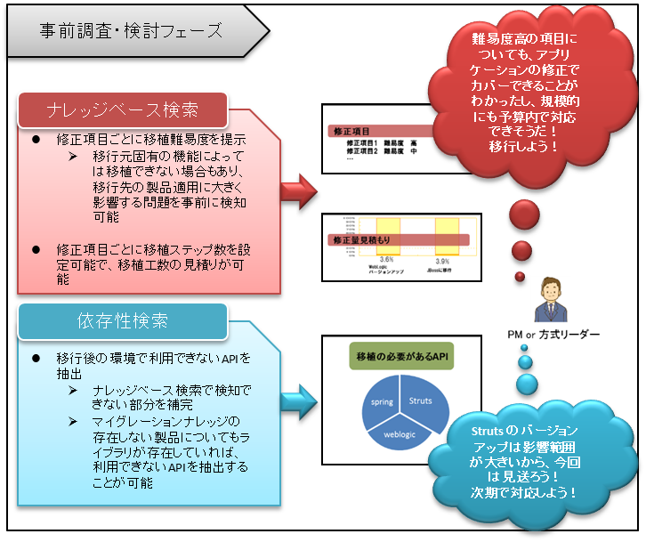

- TUBAMEはJavaアプリケーションのマイグレーション時に必要となる、修正箇所の抽出や難易度や、工数算出及び、移植方法までを提供する移植支援ツールです。
- 商用製品からOSS製品へのマイグレーションやOSS製品のバージョンアップにおいて、既存アプリケーションが移行後の環境へ移行可能かどうか、修正が必要な場合にどの程度の工数が必要になるか、各移植項目の難易度や移植方法の調査などの事前検討が必要です。
- しかし、こうした検討作業は移行後の環境で使用するOSS製品に関する知識が必須となります。
- これらのエンジニアがいない場合は、どうしても、移行後で利用するOSS製品の調査稼働が発生し、移植検討自体で多くの工数自体が必要になります。
- TUBAMEでは、修正箇所を自動で検索するためのツールを提供しています。
- また、ツール本体とは別に、修正箇所を検索するためのキーワードや修正工数、修正難易度、移植方法などをまとめたマイグレーションナレッジを提供しています。
- このマイグレーションナレッジを利用することで、移行後の環境で使用するOSS製品に関する知識がない場合でも、移植検討できるように支援するのがTUBAMEです。
-
KNOWLEDGESに現在公開中のマイグレーションナレッジの一覧があります。
- マイグレーションナレッジはXMLファイルで、ツール本体がナレッジベース検索時に利用するファイルです。
- マイグレーションガイドはHTMLファイルで、ユーザが移植方法を確認するために利用できます。
-
マイグレーションガイドはツール検索結果から参照できるほか、 KNOWLEDGESページでも公開しています。
-
QUICKSTARTの「インストール」を参考にしてください。
-
QUICKSTARTの「ナレッジベース検索」「依存性検索」や GUIDESを参考にしてください。
- ナレッジベース検索はマイグレーションナレッジ（XMLファイル）を使用して検索を実行します。
- 修正項目毎に移植難易度や修正工数を表わすことができ、修正ガイドライン（マイグレーションガイド）を参照することで修正方法が確認できます。
-
- 依存性検索は移行先の環境(ミドルウェア)で利用できないJavaパッケージやクラス情報を自動で抽出します。
- マイグレーションナレッジに記載されていない移植項目が存在する場合には本ツールを利用することで、APIレベルでの移行先で利用できないものを抽出し、移植検討漏れがないようすることができます。
-
-
ナレッジベース検索と依存性検索の検索結果は移植作業の各フェーズで以下のように活用することができます。 
-
フォーラムにノウハウを提供してください。
- TUBAMEコミッタによってマイグレーションナレッジに追加します。
-
QUICKSTARTの「レポート生成機能」や GUIDESを参考にしてください。
-
フォーラムでトピックを作成して質問してください。
- コミュニティメンバが随時回答します。